Female:
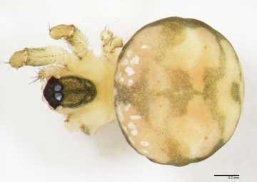Habitus dorsal view

Habitus lateral view
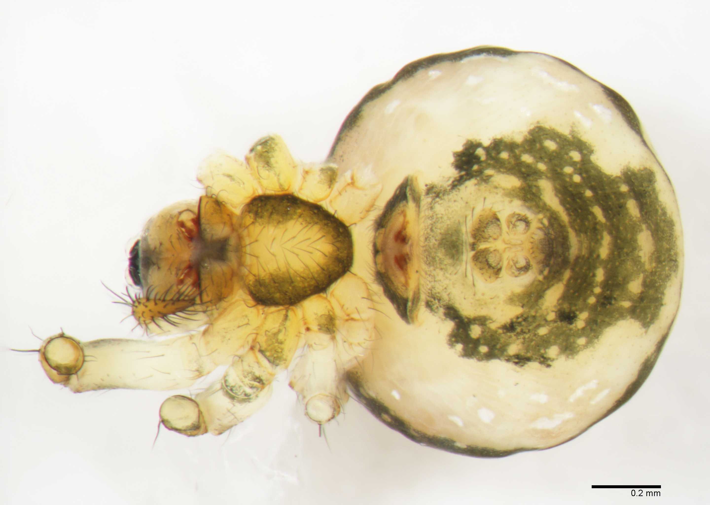Habitus ventral view
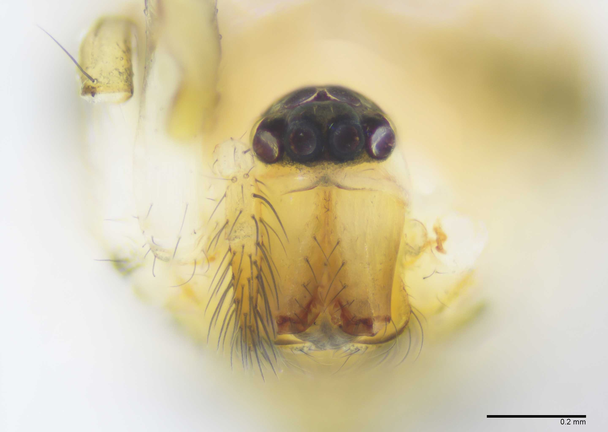Prosoma anterior view
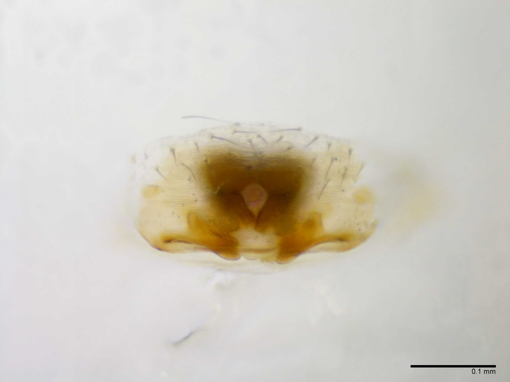Epigynum ventral view
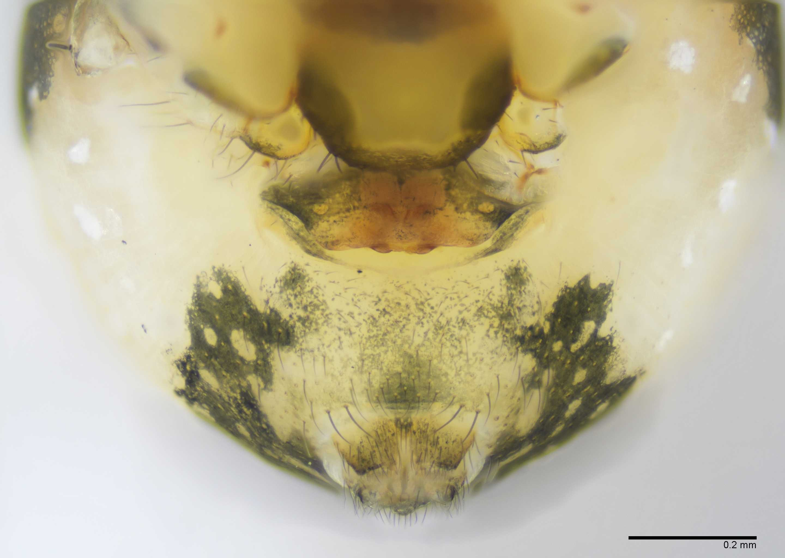Epigynum ventral view
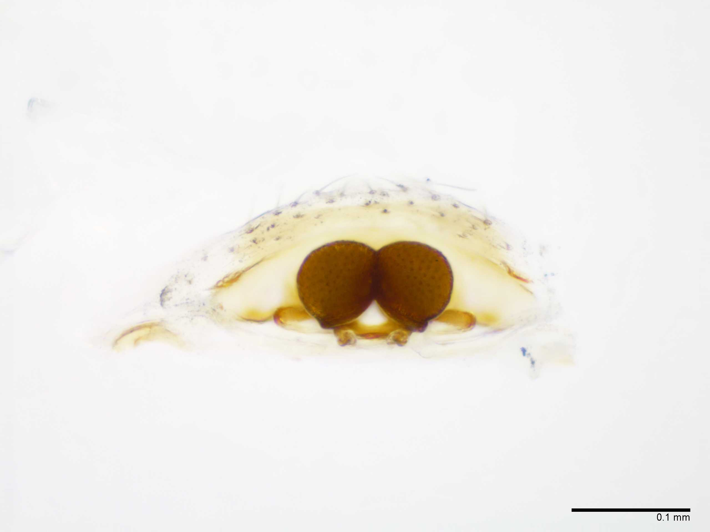Epigynum dorsal view
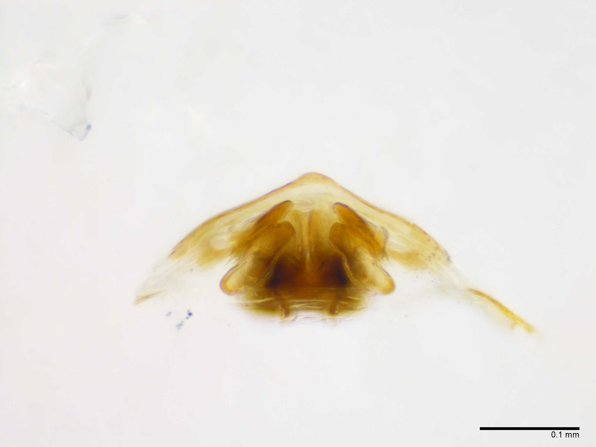Epigynum prolateral view
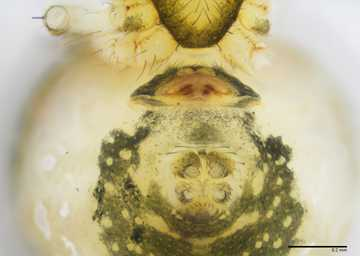Epigynum posterior view
Male:
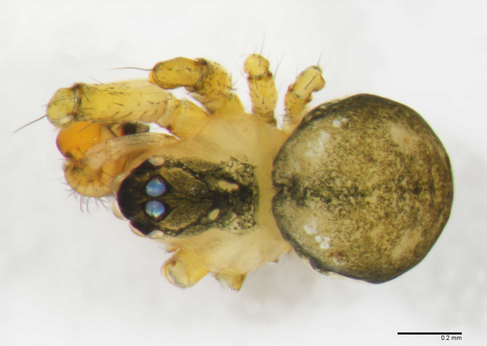Habitus dorsal view
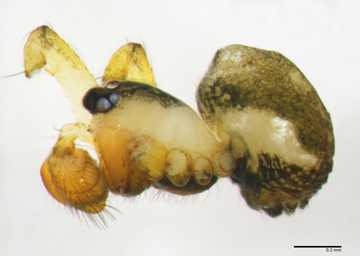Habitus lateral view
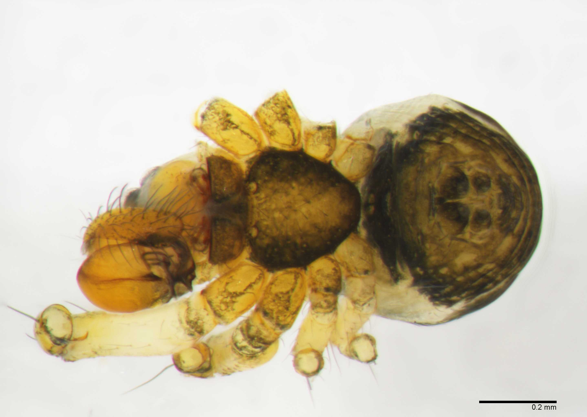Habitus ventral view
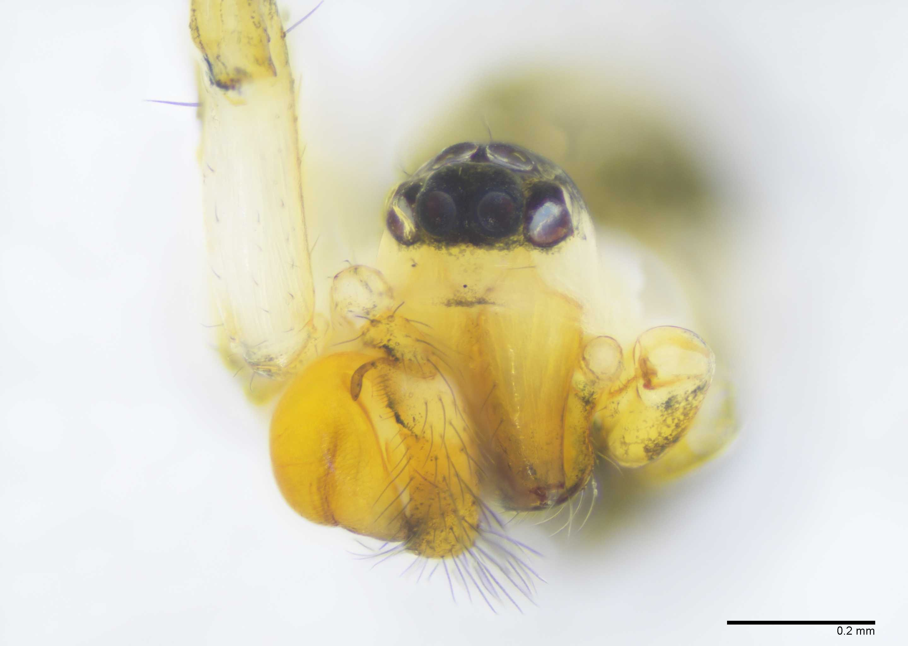Prosoma anterior view
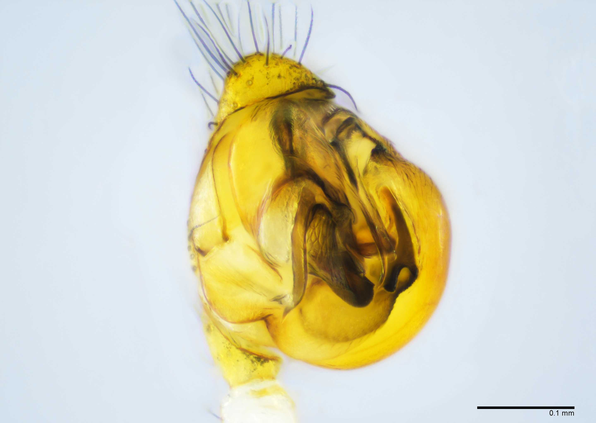Palp ventral view
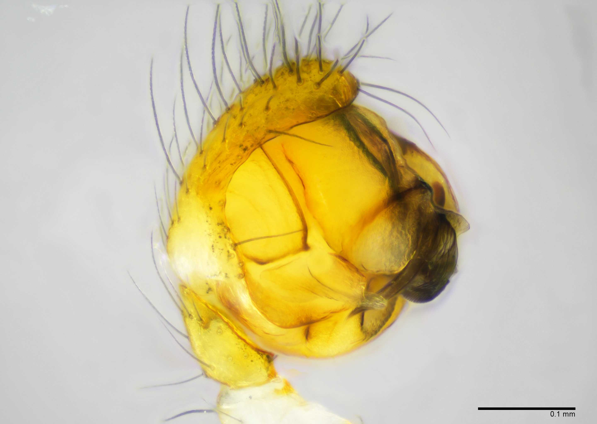Palp prolateral view